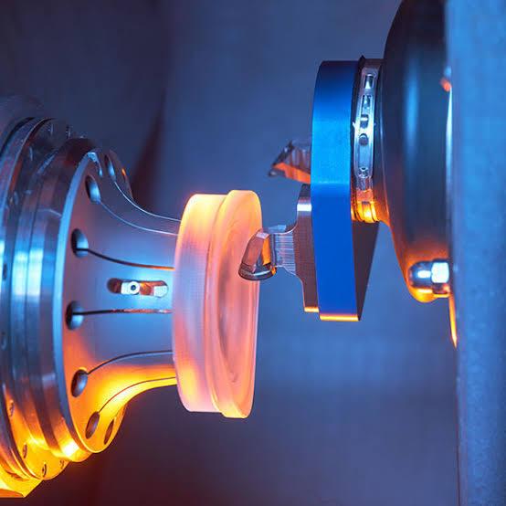
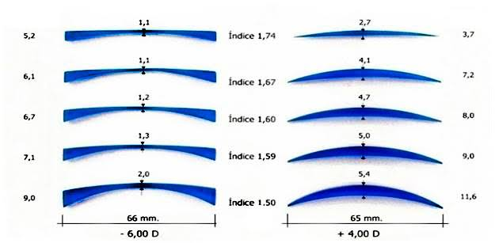

Nossas Lentes
Tecnologia a serviço da visão
Tecnologia a serviço da visão
As lentes oftálmicas são produzidas com diversos tipos de materiais. O mais importante é a qualidade, você é quem deve escolher a que melhor se adapta aos seus hábitos, necessidades e orçamento, é claro. Veja os principais tipos de materiais utilizados nas lentes oftálmicas:
Cristal (1.53): ótima qualidade de visão, porém acabam sendo mais pesadas que as outras. Resistentes ao risco, entretanto podem se quebrar com mais facilidade. Pouco utilizada nos dias de hoje.
Resina (1.49 ou 1.50): É o material mais utilizado nas lentes oftálmicas, sendo bom para graus mais baixos, mas não apresenta bom desempenho nos graus mais altas. São sensíveis a impactos.
Policarbonato (1.59): É um material bastante resistente e leve, sendo um dos preferidos para esportistas. O policarbonato também fornece boa proteção contra os raios ultravioleta do sol. Bom para graus médios, pois proporciona afinamento. Recomendado para crianças.
Trivex (1.53): é um material mais resistente que o policarbonato, fornecendo lentes leves e com 100% de proteção UV. Recomendado para crianças e esportistas.
1.60: Lentes de índice 1.60 são mais finas, proporcionando mais conforto e melhor estética visual. Lentes resistentes a quebra e com proteção UV.
1.67: São as lentes mais utilizadas por aqueles que possuem mais de 4 graus de miopia ou hipermetropia. Elas resultam em lentes mais finas que as lentes de policarbonato, trivex e 1.60. Recomenda-se o uso de tratamento antirreflexo. Lentes resistentes a quebra e com proteção UV.
1.74: São conhecidas como lentes de alto índice de refração e proporcionam lentes mais finas, ideais para quem possui a partir de 5 graus de miopia ou hipermetropia. Lentes resistentes a quebra e com proteção UV.

• Foto ilustrativa
OBS: Quanto maior o índice de refração das lentes, mais finas elas podem ficar!
• Na indicação vários pontos são avaliados, lentes, armações, formato do rosto e etc.
• A Ótica Florença, dispõe de um mostruário físico, para comparativo.
• Venha nos visitar e conhecer as melhores lentes do mercado óptico!
Ótica Florença - CNPJ: 23.398.421/0001-18
Resp. Técnico - Mariano Guglielmi